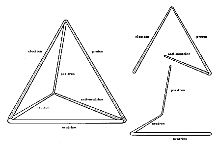

|  |
| Fig. 620.06 Tetrahedron as Vectorial Model of Quantum: The tetrahedron as a basic vectorial model is the fundamental structural system of the Universe. The open-ended triangular spiral as action, reaction, and resultant (proton, electron, and anti-neutrino; or neutron, positron, and neutrino) becomes half quantum. An association of positive and negative half-quantum units identifies the tetrahedron as one quantum. |